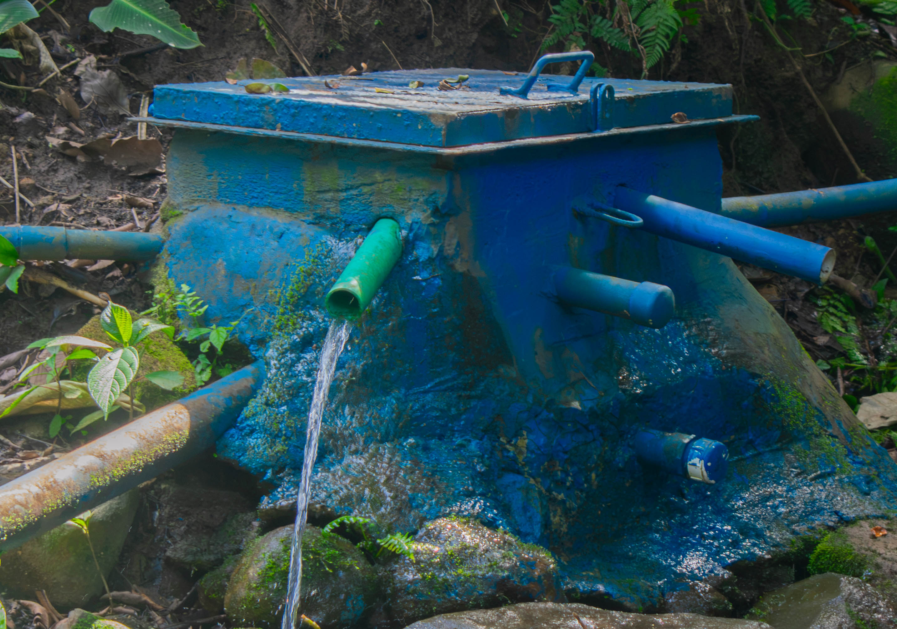
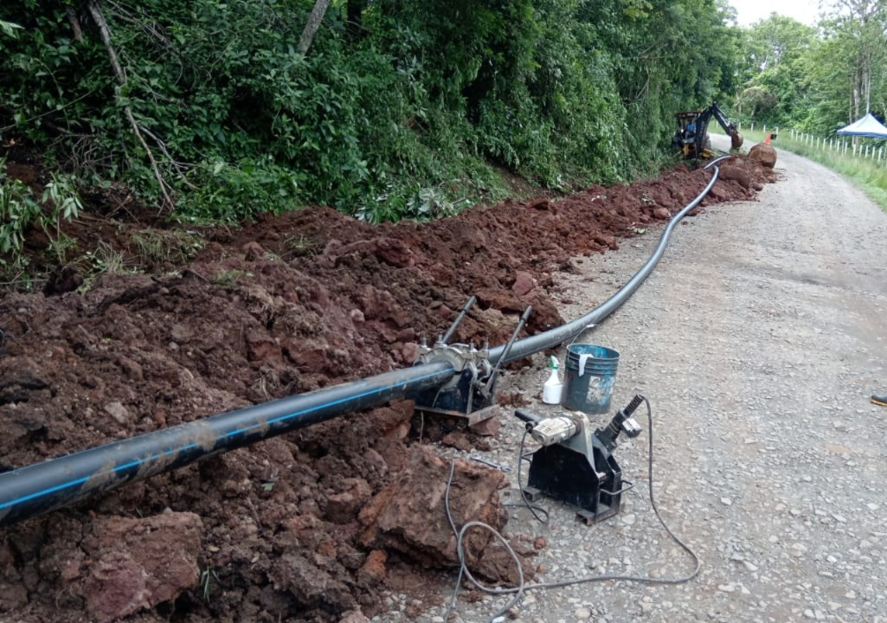
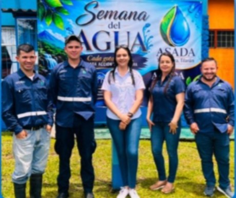

Agua potable
Brindamos el servicio de agua potable a los usuarios de nuestra comunidad.

ASADA TRONADORA
Trabajamos para brindar un servicio de agua potable confiable y de calidad a la comunidad de Tronadora.
Siga estos pasos para consultar su recibo:
BIENVENIDOS
La ASADA de Tronadora tiene como propósito brindar y administrar el servicio de agua potable para nuestra comunidad.
Nuestro trabajo busca mantener un servicio responsable, eficiente y comprometido con las necesidades de los habitantes.
Trabajamos diariamente para contribuir al acceso a un servicio de agua potable para nuestra comunidad.
NUESTRO COMPROMISO

Brindamos el servicio de agua potable a los usuarios de nuestra comunidad.

Trabajamos en el mantenimiento y cuidado de la infraestructura del acueducto.

Promovemos el compromiso y la participación de nuestra comunidad.
Todo en la sesión contactos es interactivo.